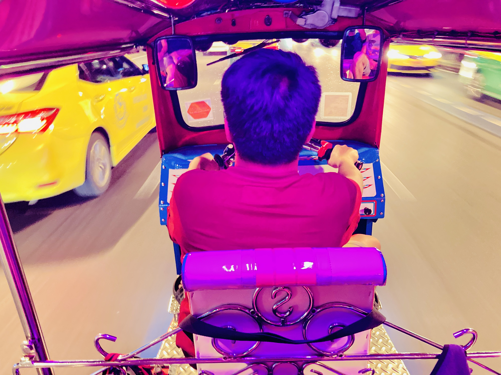
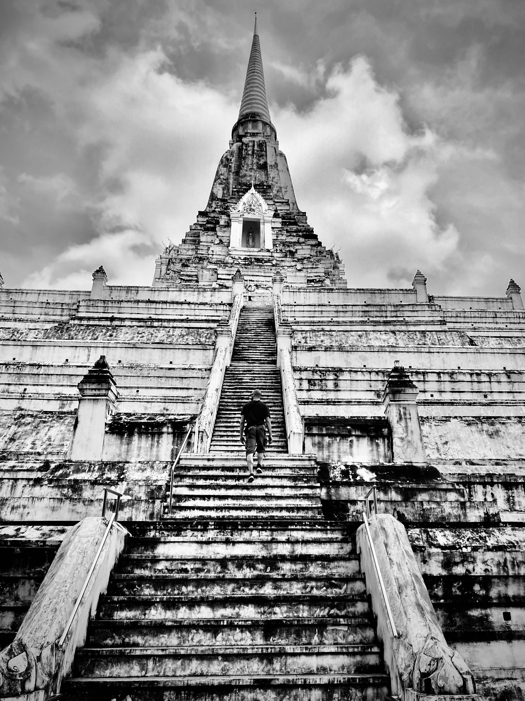
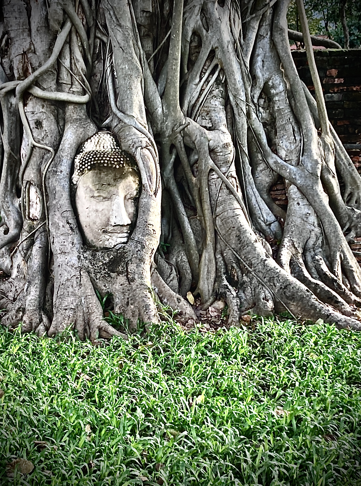
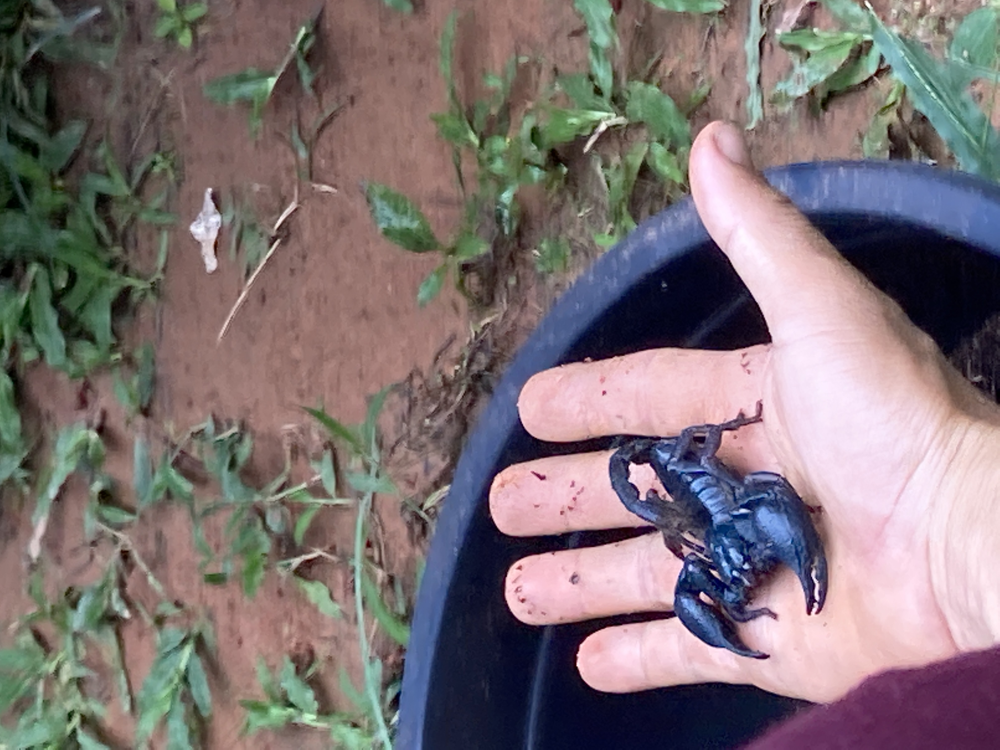
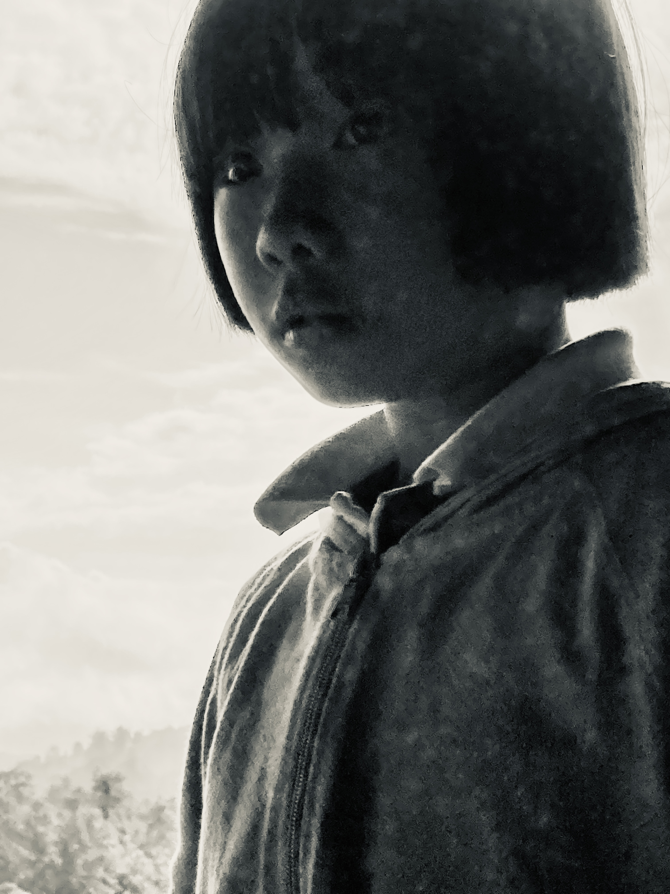

Sud-est asiatico
Data: ottobre–dicembre 2022
Rotta: Bangkok → Ayutthaya → Chiang Mai → Pai → confini Myanmar → Chiang Rai → Mekong → Luang Prabang → Vientiane → Angkor Wat → lago Tonle Sap → Hanoi → Halong Bay → Ninh Binh → Phu Quoc → Bangkok → Krabi → Tonsai → Railay
Tre mesi in loop. Partenza e arrivo Bangkok. Templi e foresta, trekking di frontiera, barca lenta sul Mekong, Angkor nella polvere, mare calcareo e arrampicata sul finale.
Bangkok
Punto di arrivo, di transito e di ritorno. La città che si rivela per strati: i canali nascosti dietro ai palazzi, Yaowarat la notte, il tuk-tuk come metrica dello spazio — si misura in accelerazioni e frenate, non in distanza.

Ayutthaya
Ottanta chilometri a nord di Bangkok. Antica capitale del regno siamese, rasa al suolo dai Birmani nel 1767. Resta il campo aperto dei prang — torri di laterizio che emergono dal verde, Buddha decapitati, nessuno che gestisce il ritmo della visita. Ci si muove in bicicletta tra i recinti.


Chiang Mai
Nord della Thailandia. La città murata, i templi del Doi Suthep sul monte con i naga serpenti lungo le scalinate. Base logistica per tutto il nord: da qui partono i bus per Pai e i pick-up per Chiang Rai.
Pai
Valle stretta tra le montagne, tre ore di tornanti da Chiang Mai. Ritmo lento, qualche cascata, fattorie e guesthouse sparse. L'aria è diversa — più fresca, meno umida. Punto di sosta prima del trekking verso il confine.
Confini con il Myanmar
Trekking multgiorno tra villaggi delle minoranze etniche — Karen, Akha, Lahu — lungo i crinali che segnano il confine. Foresta densa, terra rossa, sentieri mal tracciati. La notte in capanne. Fauna locale che si fa trovare.

Chiang Rai
Città di frontiera al Triangolo d'Oro. Da qui si prende il traghetto o il pick-up verso Huay Xai, il primo porto laotiano sul Mekong. La traversata segna un cambio di ritmo netto — il Laos rallenta tutto.
Mekong — barca lenta verso Luang Prabang
Due giorni di navigazione sul Mekong da Huay Xai a Luang Prabang. Barca lenta, panche di legno, sponde che scorrono: foresta, villaggi su palafitte, bufali nell'acqua. Pochissime soste — portare cibo. Il tempo si dilata.

Luang Prabang
La città si adagia sulla penisola tra Mekong e Nam Khan. Pagode dorate, case coloniali francesi, biciclette. Al mattino presto i monaci escono in silenzio per la questua del riso — la città si sveglia intorno a loro. La cascata di Kuang Si: acqua azzurra turchese in piscine di travertino. Andare prima delle 9.
Vientiane
Capitale del Laos, città che scorre lenta. Il That Luang dorato. Il tramonto sul Mekong dagli argini — mercatino serale, succhi di frutta pressati, le luci della Thailandia dall'altra sponda. Si attraversa il confine in bus notturno verso la Cambogia.
Angkor Wat / Siem Reap
La pianura cambogiana. Angkor Wat nel riflesso dell'alba, Bayon con i volti del Bodhisattva che guardano in ogni direzione, Ta Prohm con i ficus che scendono sui muri di arenaria come radici di un'altra era. Ci si muove in tuk-tuk o in bici, partenza all'alba per evitare il caldo e trovare i templi vuoti.
Lago Tonle Sap
Il grande lago al centro della Cambogia — in stagione delle piogge si espande fino a sei volte la sua dimensione minima. Villaggi galleggianti sull'acqua, case su palafitte, bambini in barca. Il lago regola il ciclo agricolo di tutto il paese.
Hanoi
Vietnam. Il Vecchio Quartiere con le vie specializzate per merci: carta, seta, fabbri. Caffè vietnamita con latte condensato su ghiaccio. Il lago di Hoan Kiem al centro — tartaruga leggendaria, tempio Ngoc Son sull'isolotto. Traffico di motorini che segue leggi proprie: ci si immerge senza aspettare varchi.
Halong Bay
Pinnacoli di calcare che emergono dall'acqua verde. Due giorni in barca. Grotte immense dentro le rocce, kayak tra i canali bui che sbucano in lagune chiuse dalla parete. Silenzio la mattina presto, nebbia bassa, quasi nessun'altra barca nel raggio visibile.
Ninh Binh
La Halong Bay di terra — stesse torri calcaree, ma nella pianura coltivata a riso. Si gira in barca piatta lungo i canali tra i campi e le pareti rocciose. I rematori usano i piedi. Meno turisti di Halong, ritmo completamente diverso.
Isola di Phu Quoc
Isola nel Golfo di Thailandia, estremo sud del Vietnam. Spiagge, hammock, fine novembre. Punto di decelerazione prima di rientrare verso Bangkok e poi scendere sulla costa andamanica per l'arrampicata.
Krabi / Tonsai / Railay
Costa andamanica, dicembre. Tonsai Beach è accessibile solo in barca o arrampicando sul promontorio — nessuna strada. Il camp è nel bosco tra le pareti calcaree che precipitano in mare. Arrampicata su calcare marino: appigli taglienti, vie che escono sull'acqua, tufo stalattittico. Il tramonto visto dal mare con le torri di roccia intorno.
Railay è raggiungibile solo via mare. Stessa roccia, stessa luce, qualche persona in più. La laguna nascosta si raggiunge solo con la bassa marea, strisciando sotto la parete — una vasca verde circondata di calcare.